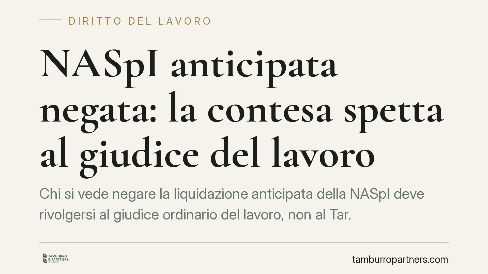

NASpI anticipata negata: la contesa spetta al giudice del lavoro
Chi si vede negare la liquidazione anticipata della NASpI deve rivolgersi al giudice ordinario del lavoro, non al Tar. La prestazione configura un diritto soggettivo, non un interesse legittimo, e segue il rito previdenziale. Una distinzione che incide su tempi, strategia difensiva e adempimenti preliminari da rispettare a pena di improcedibilità o decadenza.

Il punto
La NASpI è l'indennità di disoccupazione erogata dall'INPS. In via ordinaria viene corrisposta mensilmente, ma l'art. 8 del D.lgs. 22/2015 consente di richiederne la liquidazione anticipata in un'unica soluzione (in forma di capitale), per incentivare l'autoimprenditorialità.
Quando l'INPS nega questa anticipazione, si pone un problema preliminare ma decisivo: davanti a quale giudice si contesta il rifiuto? La risposta orienta tempi, costi e modalità della difesa.
Nota di redazione. Sul tema risulta formarsi un orientamento della Corte di Cassazione a Sezioni Unite a favore della giurisdizione del giudice ordinario del lavoro. Gli estremi esatti della pronuncia (numero e anno) sono in corso di verifica: il presente contributo espone il principio, non una massima da citare come definitiva.
Inquadramento normativo
Il criterio di riparto di giurisdizione tra giudice ordinario e giudice amministrativo (Tar) ruota attorno alla natura della posizione giuridica fatta valere.
Se il cittadino vanta un diritto soggettivo – cioè una pretesa riconosciuta direttamente dalla legge al verificarsi di presupposti predeterminati – la controversia spetta al giudice ordinario. Se invece è in gioco un interesse legittimo – una posizione che si confronta con il potere discrezionale della pubblica amministrazione – la competenza è del Tar.
La NASpI, comprese le sue forme di erogazione, costituisce un diritto soggettivo di natura previdenziale: l'INPS non esercita discrezionalità, ma accerta la sussistenza dei requisiti di legge. Ne consegue che il diniego di anticipazione va impugnato davanti al giudice del lavoro, con il rito previdenziale previsto dagli artt. 442 e 443 c.p.c.
L'anticipazione ex art. 8 D.lgs. 22/2015 non è però automatica. È subordinata a presupposti sostanziali precisi: l'avvio di un'attività lavorativa autonoma, di un'impresa individuale o la sottoscrizione di una quota di capitale sociale di una cooperativa. La domanda va presentata, a pena di decadenza, entro 30 giorni dall'inizio dell'attività.
Implicazioni pratiche
Per il lavoratore che riceve un diniego, la qualificazione della controversia non è un dettaglio teorico. Sbagliare giudice significa un ricorso inammissibile, con perdita di tempo e, potenzialmente, dei termini utili.
La scelta del giudice ordinario comporta inoltre due passaggi preliminari da presidiare con attenzione.
Il primo riguarda il previo esaurimento dei ricorsi amministrativi. L'art. 443 c.p.c. sanziona con l'improcedibilità la domanda giudiziale proposta senza aver prima attivato il procedimento amministrativo davanti all'INPS. Prima di andare dal giudice occorre dunque aver percorso la fase interna all'Istituto.
Il secondo riguarda i termini di decadenza. Nel contenzioso previdenziale rileva l'art. 47 del D.P.R. 639/1970, che fissa termini entro i quali va proposta l'azione giudiziaria. Superati quei termini, il diritto alla prestazione non è più azionabile, a prescindere dalla fondatezza nel merito.
Un ulteriore profilo attiene all'ampiezza dell'accertamento del giudice. Secondo l'orientamento in via di consolidamento, il giudice del lavoro non si limita a sindacare i motivi addotti dall'INPS nel diniego, ma verifica la sussistenza dei presupposti di legge della prestazione. Si tratta tuttavia di un aspetto da leggere alla luce del testo integrale della pronuncia, una volta confermati gli estremi.
Cosa fare in concreto
- Verificate i presupposti sostanziali dell'art. 8 D.lgs. 22/2015: avvio di attività autonoma, impresa individuale o quota in cooperativa. Senza questi, l'anticipazione non spetta.
- Rispettate il termine di 30 giorni dall'inizio dell'attività per presentare la domanda di anticipazione all'INPS: è un termine di decadenza.
- Esaurite il ricorso amministrativo interno all'INPS prima di agire in giudizio, per non incorrere nell'improcedibilità ex art. 443 c.p.c.
- Calcolate i termini di decadenza ex art. 47 D.P.R. 639/1970 per l'azione giudiziaria e organizzatevi di conseguenza.
- Indirizzate l'eventuale ricorso al giudice del lavoro con rito previdenziale, non al Tar. In caso di dubbio sulla qualificazione, consigliamo di sottoporre la posizione a un professionista.
Disclaimer
Contributo informativo a cura di Tamburro & Partners – Avv. Giuseppe Tamburro. Non costituisce parere legale.
Ogni storia di lavoro ha i suoi tempi.
Se gestisci HR e vuoi un confronto su contenzioso, ispezioni o licenziamenti, scrivi allo studio. Ti rispondiamo entro un giorno lavorativo.